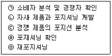
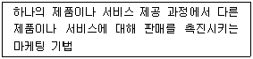
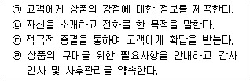
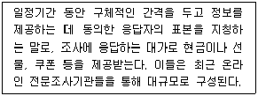
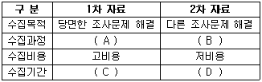
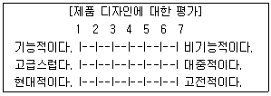
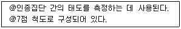
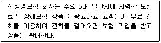
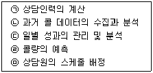
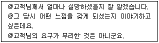

텔레마케팅관리사 (2011-06-12 기출문제)
1과목: 판매관리
1. 제품 수명주기 중 성장기의 특성과 가장 거리가 먼 것은?
- 제품의 판매가 대폭 증가하기 시작한다.
- 새로운 경쟁사들이 이익의 기회를 잡기 위해 시장에 진입한다.
- 광고의 일부를 제품 인지로부터 제품 확산과 구매를 유도하기 위한 광고로 변경한다.
- 시장수정, 제품수정, 마케팅 믹스 수정 등의 전략을 고려한다.
(정답률: 70%)

2. 세분시장을 더욱 작게 세분화함으로써 다른 제품들로는 그 욕구가 충족되지 않은 소수의 소비자들을 표적으로 하는 마케팅은?
- 대량 마케팅(Mass Marketing)
- 니치 마케팅(Niche Marketing)
- 블루오션 마케팅(Blue Ocean Marketing)
- 관계 마케팅(Relationship Marketing)
(정답률: 45%)
3. 데이터베이스 마케팅의 목적이 아닌 것은?
- 고객가치의 극대화를 통한 기업가치의 극대화이다.
- 많은 고객을 확보하고, 기존고객의 이탈을 방지하고, 고객을 강화한다.
- 고객에 대해 판매를 최대화하고 비용을 최소화하여 수익을 극대화한다.
- 즉각적인 고객의 반응을 이끌어낸다.
(정답률: 50%)
4. 매우 비탄력적인 수요곡선을 지니는 신상품을 도입할 때 가장 적합한 가격책정전략은?
- 고가가격전략
- 침투가격전략
- 초기할인전략
- 경쟁가격전략
(정답률: 78%)
5. 아웃바운드 텔레마케팅의 특징으로 옳지 않은 것은?
- 전화를 거는 것(Outbound)이 받는 것(Inbound)보다 더 고도의 기술이 필요하다.
- 아웃바운드는 목표 지향적 마케팅이다.
- 데이터베이스 마케팅 기법을 활용하고 있다.
- 일반적으로 스크립트 활용 빈도가 매우 낮다.
(정답률: 88%)
6. 소비자 구매의사 결정에 관한 단계별 설명으로 틀린 것은?
- 정보탐색 - 소비자들이 이용하는 정보탐색 활동에는 인적, 상정, 공공, 경험 등이 있다.
- 문제인식 - 소비자 구매의사 결정 과정의 첫 단계이다.
- 대체안 평가 - 가장 선호하는 상표를 구매한다.
- 구매 후 행동 - 제품 사용성과에 만족한 소비자는 재구매의 가능성이 높다.
(정답률: 72%)
7. 포지셔닝(Positioning) 전략 수립절차로 맞는 것은?

- (ㄱ) → (ㄷ) → (ㄴ) → (ㄹ) → (ㅁ)
- (ㄹ) → (ㄴ) → (ㄱ) → (ㄷ) → (ㅁ)
- (ㄱ) → (ㄹ) → (ㄷ) → (ㄴ) → (ㅁ)
- (ㄹ) → (ㄱ) → (ㄴ) → (ㄷ) → (ㅁ)
(정답률: 64%)
8. 기업의 내적 강점과 약점, 그리고 외부위협과 기회를 자세히 평가하는 데 사용할 수 있는 기법은?
- SWOT 분석
- 시장세분화
- 전략적 관리
- 수익성 분석
(정답률: 80%)
9. 다음 용어에 대한 설명으로 옳은 것은?

- 업 셀링(Up-selling)
- 크로스 셀링(Cross-selling)
- 마케팅 믹스(Marketing Mix)
- 아웃바운드 텔레마케팅(Outbound Telemarketing)
(정답률: 71%)
10. 효과적인 시장세분화의 조건으로 틀린 것은?
- 세분세장은 정보의 측정 및 획득이 용이해야 한다.
- 세분시장에 효과적으로 접근할 수 있는 적절한 수단이 존재해야 한다.
- 세분시장 사이에 차별적인 반응(Differentiability)이 나오지 않도록 주의해야 한다.
- 각 세분시장은 기업이 개별적인 마케팅 프로그램을 시행할 수 있을 정도로 충분한 규모를 지니고 있어야 한다.
(정답률: 73%)
11. 제품의 수명주기를 연장시키기 위한 전략 중 제품을 수정이나 변형시키지 않고 기존 표적시장에서 소비자들의 참가를 증진시키는 것은?
- 시장침투
- 프로그램 개발
- 시장개발
- 프로그램 다각화
(정답률: 62%)
12. 고객이 기업과 기업의 브랜드를 만날 수 있는 모든 접점을 통해 일관적이고, 설득력 있는 메시지를 전달하기 위한 전략은?
- 통합 마케팅 커뮤니케이션(IMC : Integrated Marketing Communication) 전략
- 통합 마케팅(IM : Integrated Marketing) 전략
- 통합 광고(IA : Integrated Advertising) 전략
- 통합 판매 믹스(ISM : Integrated Sales Mix) 전략
(정답률: 71%)
13. 아웃바운드 텔레마케팅 상품판매의 상담 순서로 바르게 나열한 것은?

- (ㄴ) → (ㄱ) → (ㄷ) → (ㄹ)
- (ㄱ) → (ㄴ) → (ㄷ) → (ㄹ)
- (ㄴ) → (ㄷ) → (ㄱ) → (ㄹ)
- (ㄱ) → (ㄴ) → (ㄹ) → (ㄷ)
(정답률: 73%)
14. 다음 중 아웃바운드 텔레마케팅의 특성에 관한 설명으로 틀린 것은?
- 고객의 정보를 수집하는 데 효과적이다.
- 전화를 걸기 위한 사전준비가 필요하다.
- 고객에게 능동적으로 전화를 거는 마케팅 활동이다.
- 전화를 거는 고객 주도형이기 때문에 판매나 주문으로 연결시키기 쉽다.
(정답률: 82%)
15. 고객정보시스템의 고객정보에 해당하지 않는 것은?
- 인구통계적 특성
- 라이프스타일
- 고객이 추구하는 혜택
- 고객관리 소프트웨어
(정답률: 50%)
16. 데이터베이스 마케팅의 전제조건에 대한 설명으로 틀린 것은?
- 모든 고객이 똑같지 않으며, 따라서 서로 다르게 대우를 받아야 한다.
- 상품 중심의 마케팅에서 벗어나 고객 중심의 마케팅체제로 변환해야 한다.
- 개별 고객이 필요로 하는 상품과 서비스를 파악하여 이를 효과적으로 제공하도록 노력해야 한다.
- 같은 고객 리스트를 대상으로 단시일 내에 반복해서 접촉하면 반응률이 증가한다.
(정답률: 75%)
17. 기업이 시장세분화를 기초로 정해진 표적시장 내 고객들의 마음속에 시장분석, 고객분석, 경쟁분석 등을 기초로 하여 전략적 위치를 계획하는 것은?
- 판매촉진
- 표적시장
- 상표전환
- 포지셔닝
(정답률: 58%)
18. 인바운드 고객 상담에 대한 설명으로 가장 거리가 먼 것은?
- 인바운드 고객 상담은 고객주도형이다.
- 인바운드 고객 상담은 주로 대답하기형 문의상담 기능이 강하다.
- 일반적으로 Q&A Sheet의 활용이 낮다.
- 고객의 대기시간을 줄이는 것이 중요하다.
(정답률: 86%)
19. 로열티 고객이 가져다주는 이점으로 적절하지 않은 것은?
- 고객관리 유지비용이 절감된다. 그리고 기본적으로 제품 및 서비스의 누계이익 기여도가 높아지고 불평, 불만, A/S 건수가 줄어든다.
- 추천성이 높아 고객창출이 용이해진다. 고객확보의 매력은 기존고객이 자사에 제품 및 서비스를 다른 잠재 고객에게 추천함으로써 새로운 로열티 고객을 창출할 수 있다는 점이다.
- 특정인의 이름이나 직위 등 입수된 정보를 활용하여 커뮤니케이션을 시도하며, 접촉하는 개개인에 따라 각기 다른 메시지를 전달할 수 있다.
- 자사 제품과 서비스를 구입하여 애용해 주는 로열티 고객의 사전기대를 정확하게 파악하고 끊임없이 이를 상회하는 제품과 서비스를 제공할 수도 있다.
(정답률: 75%)
20. 아웃바운드 텔레마케팅 판매 전략 중 마케팅 목적에 적합한 우량고객간 추출해내는 것은?
- Market Research
- List Screening
- Cross Sale
- Indirect Survey
(정답률: 83%)
21. 본사가 다른 업체와 계약을 맺고 그 업체가 일정기간 동안 자사의 상호, 기업운영방식 등을 사용하여 사업을 할 수 있도록 권한을 부여하는 유통 제도를 일컫는 말은?
- 다단계 제도
- 도매상 제도
- 분업화 제도
- 프랜차이즈 제도
(정답률: 72%)
22. 다음 중 묶음가격의 효과에 관한 설명으로 틀린 것은?
- 기업은 핵심제품 또는 서비스에 대한 수요를 더욱 증대시킬 수 있다.
- 기업은 부수적인 제품 또는 서비스의 수요를 창출할 수 있다.
- 기업은 묶음가격을 통한 시너지 효과로 보다 높은 가격으로 제품 또는 서비스를 제공할 수 있다.
- 소비자는 보다 많은 제품 또는 서비스에 대한 정보를 얻을 수 있다.
(정답률: 69%)
23. 어떤 회사나 그 회사의 제품에 관한 홍보를 소비자들의 입을 빌어 “입에서 입으로”라는 원리를 이용한 방식으로 빠른 시일 내에 큰 효과를 볼 수 있는 마케팅 수단 중의 하나인 것은?
- 바이러스 마케팅
- 패션 마케팅
- 관계 마케팅
- 니치 마케팅
(정답률: 75%)
24. 고객의 다양한 정보를 컴퓨터에 축적하여 이것을 가공#비교#분석#통합하여 마케팅활동에 재활용할 수 있도록 하는 마케팅 기법은?
- 표적 마케팅
- 고객관리 마케팅
- 데이터베이스 마케팅
- 정보화 마케팅
(정답률: 71%)
25. 고객 데이터베이스의 설계 및 활용 방안으로 적합하지 않은 것은?
- 고객의 체계적 분류를 실현한다.
- 고객별 DM 반응도를 분석한다.
- 제품별 판매 히스토리를 분석한다.
- 고객 라이프스타일을 분류한다.
(정답률: 46%)
2과목: 시장조사
26. 자료조사 후 코딩과정에 대한 설명으로 틀린 것은?
- 모든 응답이 빠짐없이 범주화되어 코딩되어야 한다.
- 자세한 응답 내용이 파악될 수 있도록 충분한 범주로 나누어 코딩한다.
- 기타로 응답된 경우에도 범주에 포함되어야 한다.
- 대체로 응답범주는 크게(세부적인 것보다) 나누는 것이 좋다.
(정답률: 78%)
27. 다음은 무엇에 관한 설명인가?

- 모집단
- 모델
- 패널
- 판매자
(정답률: 60%)
28. 시장조사의 절차 중 자료의 분석과 해석에 대한 설명으로 적절하지 않은 것은?
- 표본자료를 분석하여 모집단의 성격을 파악하기 위해 도수분포표와 기술통계치를 분석한다.
- 각 변수별 기술통계치를 알아보기 위해 인과관계 통계 분석방법을 사용한다.
- 조사결과를 마케팅 측면에서 유용하게 활용할 수 있도록 해석한다.
- 조사결과를 토대로 활용시기, 효과, 비용을 분석하여 최종보고서를 작성한다.
(정답률: 50%)
29. A구에 거주하는 30대 직장여성을 대상으로 선호도를 조사하려 한다. 조사의 신뢰도를 높이기 위해 일주일 간격으로 2번 동일한 측정을 실시하는 방법은?
- 재시험범
- 평형형식법
- 요인분석법
- 반분법
(정답률: 89%)
30. 다음은 1차 자료와 2차 자료를 비교한 것이다. ( ) 안에 들어갈 알맞은 것은?

- A - 저관여, B - 고관여, C - 장기, D - 단기
- A - 고관여, B - 저관여, C - 장기, D - 단기
- A - 저관여, B - 저관여, C - 단기, D - 장기
- A - 고관여, B - 고관여, C - 단기, D - 장기
(정답률: 84%)
31. 개인의 사생활(Privacy)보호와 면접조사가 어려울 때 실시할 수 있는 조사방법으로 가장 적합한 것은?
- 조사원을 이용하여 질문지를 배포하고 우편으로 회수한다.
- 조사원을 이용하여 질문지를 배포하고 전화로 조사한다.
- 우편으로 질문지를 배포하고 전화로 조사한다.
- 조사 대상자들을 한 자리에 모아 질문지를 배포하고 전화로 조사한다.
(정답률: 74%)
32. 마케팅 조사 설계시 내적 타당성을 저해하는 요소에 해당되지 않는 것은?
- 통계적 회귀
- 특정사건의 영향
- 사전검사의 영향
- 반작용 효과
(정답률: 56%)
33. 설문지의 문항을 결정할 때 주의할 점이 아닌 것은?
- 주제에 대한 오리엔테이션을 위한 개방형 질문은 먼저 한다.
- 쉽고 흥미를 끌 수 있는 질문부터 시작한다.
- 동일한 주제의 경우 복잡한 질문에서 단순한 질문으로 진행한다.
- 일반적인 질문은 구체적인 질문보다 앞에 질문한다.
(정답률: 83%)
34. 다음 중 면접자 선정시 고려해야 할 사항과 가장 거리가 먼 것은?
- 응답자에 접근 용이도
- 면접 목적
- 질문 내용
- 면접의 수행경제력
(정답률: 82%)
35. 전화조사를 할 때 응답 대상의 전체집단 중 그 특성을 그대로 살리면서 소수의 적절한 응답자를 뽑은 대상을 무엇이라 하는가?
- 표본
- 표집
- 모수
- 모집단
(정답률: 63%)
36. 다음 척도의 종류는?

- 서스톤 척도
- 리커트 척도
- 거트만 척도
- 의미분화 척도
(정답률: 60%)
37. 시장조사의 첫 단계인 “문제정의”에 대한 설명에 해당되는 것은?
- 연구목적, 관련된 배경정보, 필요한 정보와 이 정보가 마케팅 의사결정에 어떻게 사용될 것인지의 고려가 필요하다.
- 조사의 목적이나 이론적 틀, 분석모델, 연구질문, 가설 등을 공식화하고 리서치 디자인에 영향을 줄 수 있는 요인이나 특성을 규명한다.
- 현장에서 개인면접, 우편면접, 전화조사 등의 방법을 통해 조사한다.
- 자료의 편집, 코딩, 복사 그리고 검증 등을 포함한다.
(정답률: 32%)
38. 조사자와 응답자 간의 의사소통방법에 의한 1차 자료 수집방법의 종류로 옳지 않은 것은?
- 관찰법
- 서베이
- 심층면접법
- 투사법
(정답률: 15%)
39. 질문용어 결정시 유의할 사항으로 옳지 않은 것은?
- 응답자들이 전문용어를 이해할 것으로 가정하고 가능한 전문용어를 사용한다.
- 선택형 질문에 대해서는 응답자들의 모든 가능한 응답을 제시하여야 한다.
- 선택형 지문의 경우 응답항목들 간에 내용상 중복이 있어서는 안 된다.
- 응답자들이 대답하기 곤란한 질문은 간접적으로 물어본다.
(정답률: 66%)
40. 다음 중 비확률표집의 장점이 아닌 것은?
- 모집단을 정확하게 규정지을 수 없는 경우에 유용하다.
- 개별요소의 추출확률을 동일하게 해야 할 경우 유용하다.
- 표본의 크기가 작은 경우에 유용하다.
- 표집오차가 큰 문제가 되지 않을 경우에 유용하다.
(정답률: 72%)
41. 전화면접법에 대한 설명으로 옳지 않은 것은?
- 전화번호부를 표본프레임으로 선정하여 사용한다.
- 무작위로 전화번호를 추출(Random-digit Dialing)하는 방법이 사용된다.
- 전화면접법은 링크 서베이(Link survey)라고도 한다. %
- 통화시간상 제약이 존재한다.
(정답률: 53%)
42. 질문지를 구성하는 일반적인 방법과 가장 거리가 먼 것은?
- 첫 번째 질문은 쉽게 응답할 수 있고 흥미를 유발할 수 있는 것이 좋다.
- 응답자와 관련된 인적사항 질문을 우선적으로 하여 긴장을 푸는 것이 좋다.
- 질문항목 간의 연계 및 관계를 고려하여 질문하는 것이 좋다.
- 응답자가 심사숙고해야 하는 질문은 가능한 뒤에 하는 것이 좋다.
(정답률: 48%)
43. 우편조사의 응답률에 영향을 미치는 요인과 가장 거리가 먼 것은?
- 연구주관기관 및 지원 단체의 성격
- 응답집단의 동질성
- 응답자의 지역적 범위
- 질문지의 양식 및 우송방법
(정답률: 66%)
44. 수집된 자료 중 2차 자료의 장점이 아닌 것은?
- 저렴한 비용
- 수집과정의 용이성
- 시간의 절약
- 입수자료의 적합성
(정답률: 74%)
45. 자료 수집을 위하여 사용하는 척도 중에서 다음의 특징을 가진 척도는?

- 리커트의 척도
- 오스굿의 척도
- 보가더스 척도
- 서스톤 척도
(정답률: 31%)
46. 현재의 조사프로젝트를 수행하면서 조사자 자신이나 조사자가 의뢰한 조사기관에 의하여 실사를 통해 처음으로 수집된 자료는?
- 1차 자료
- 2차 자료
- 외부 자료
- 내부 자료
(정답률: 56%)
47. 설문지 작성 절차로 올바른 것은?
- 필요정보 결정 → 자료수집 방법 결정 → 개별항목 내용 결정 → 질문형태의 결정 → 질문의 순서 결정 → 설문지 사전조사
- 필요정보 결정 → 개별항목 내용 결정 → 자료수집 방법 결정 → 질문형태의 결정 → 질문의 순서 결정 → 설문지 사전조사
- 개별항목 내용 결정 → 자료수집 방법 결정 → 필요정보 결정 → 질문형태의 결정 → 질문의 순서 결정 → 설문지 사전조사
- 개별항목 내용 결정 → 자료수집 방법 결정 → 필요정보 결정 → 질문형태의 결정 → 서룬지 사전조사 → 질문의 순서 결정
(정답률: 46%)
48. 시장조사의 중요성과 거리가 먼 것은?
- 고객의 특성, 욕구, 그리고 행동에 대한 정확한 이해를 통해 고객지향적인 마케팅활동을 가능하게 해준다.
- 마케팅 전략 수립 및 집행에 필요한 모든 정보를 적절한 시기에 입수할 수 있다.
- 시장조사는 타당성과 신뢰성 높은 정보의 제공을 통해 의사결정의 기대가치를 높일 수 있는 수단이 된다.
- 정확한 시장정보와 경영활동에 대한 효과분석은 기업목표의 달성에 공헌할 수 있는 자원의 배분과 한정된 자원의 효율적인 활용을 가능하게 한다.
(정답률: 57%)
49. 자료를 수집하고 자료를 처리하는 과정에서 코딩이나 입력을 하지 않아도 되므로 시간을 절약할 수 있는 조사는?
- 인터넷조사
- 우편조사
- 전화조사
- 방문조사
(정답률: 66%)
50. 조작적 정의의 설명으로 가장 올바른 것은?
- 측정 대상이 되는 개념(Concept)의 의미를 사전적으로 정의내린 것이다.
- 대상의 특성을 숫자로 표현하기 위해 수량화(Quantification)하는 과정이다.
- 조사 대상들의 순위를 기록하는 것을 말한다.
- 측정대상이 되는 개념(Concept)에 대해 응답자가 구체적인 수치를 부여할 수 있는 상태로 상세한 정의를 내린 것을 말한다.
(정답률: 61%)
3과목: 텔레마케팅관리
51. 다음 중 훈련의 효과성 평가에 관한 설명으로 틀린 것은?
- 반응평가는 주로 훈련프로그램이 끝났을 때 강사의 평가로 이루어진다.
- 학습평가는 학습자의 학습내용 숙지 여부를 평가하는 것이다.
- 적용평가를 통해 응용을 촉진 또는 방해하는 요인에 대한 규명이 이루어진다.
- ROI평가를 통해 훈련 투자에 대한 수익에 대해 평가한다.
(정답률: 43%)
52. 다음은 어떤 형태의 텔레마케팅인가?

- 인바운드(Inbound), 기업 대 소비자(B to C)
- 인바운드(Inbound), 기업 대 기업(B to B)
- 아웃바운드(Outbound), 기업 대 소비자(B to B)
- 아웃바운드(Outbound), 기업 대 기업(B to B)
(정답률: 78%)
53. 콜센터 시스템 매니저의 역할로 적합하지 않은 것은?
- 콜센터 전반의 시스템을 관리하고, 시스템 업그레이드를 실시한다.
- 시스템의 장애를 예방하고 장애시 신속히 복구하여야 한다.
- 보안에 대처하여 서비스 연속성을 관리하여야 한다.
- PDS와 같은 시스템을 이용한 효과 분석을 하여야 한다.
(정답률: 43%)
54. 역할연기(Role Playing)의 목적과 가장 거리가 먼 것은?
- 커뮤니케이션의 능력을 향상시킨다.
- 업무지식을 습득한다.
- 텔레마케팅 스킬능력을 향상시킨다.
- 예기치 못한 상황 대처능력을 향상시킨다.
(정답률: 75%)
55. 콜센터에서 총 발신 수에 대한 반응비율을 나타내는 것은?
- CPC(Cost Per Call)
- CPO(Cost Per Order)
- CRR(Call Response Rate)
- OR(Oder Rate)
(정답률: 64%)
56. 서비스 전략적인 측면에서 본 콜센터의 역할이 아닌 것은?
- 콜센터는 철저한 서비스 실행 조직으로서 기업 전체에 미칠 영향을 중요시해야 한다.
- 서비스 및 고객 니즈를 정확히 이해하고 이애 대해 피드백을 줄 수 있어야 한다.
- 기업의 서비스 전략을 효과적으로 수행하기 위한 콜센터 성과지표(KPI)를 가지고 있어야 한다.
- 고객에게 신속한 서비스를 제공하기 위하여 커뮤니케이션 채널도 단순화시켜야 한다.
(정답률: 74%)
57. 텔레마케터를 선발할 때 사용하는 텔레마케터 면접기준표에 여러 항목들이 포함되어 있다. 이 항목 중 경청, 지식욕, 신뢰성, 유연성을 평가하는 것은?
- 표현 및 구술 능력
- 품성 및 조직 적응력
- 음성적 자질
- 청취 및 이해력
(정답률: 54%)
58. 콜센터의 인력관리 프로세스를 바르게 나열한 것은?

- (ㄱ) → (ㄴ) → (ㄹ) → (ㅁ) → (ㄷ)
- (ㄴ) → (ㄱ) → (ㄹ) → (ㅁ) → (ㄷ)
- (ㄴ) → (ㄹ) → (ㄱ) → (ㅁ) → (ㄷ)
- (ㄴ) → (ㄷ) → (ㄹ) → (ㅁ) → (ㄱ)
(정답률: 48%)
59. 텔레마케터를 위해 필요한 교육 프로그램이 아닌 것은?
- 커뮤니케이션
- 판매 스킬
- 전산시스템 개발
- 스트레스 관리
(정답률: 73%)
60. 콜센터에 근무하는 조직원의 심리적 불안과 갈등이 개인적인 문제에서 점차 조직적인 문제로 전이되어 결국 콜센터의 비능률과 생산성 저하를 초래하는 심리현상을 무엇이라 하는가?
- 콜센터 심리공항
- 콜센터 바이탈 사인
- 조하리 창
- 콜센터 바이러스
(정답률: 55%)
61. 텔레마케팅을 수행하는 과정에서 고객과 텔레마케터 간의 공감대 형상을 위한 RAPPORT 형성기법에 관한 설명으로 가장 적합한 것은?
- 고객의 불만이나 문제해결을 위한 방법을 제안하여 현재 요구를 확인시켜주는 질문기법이다.
- 판매종결에 필요한 정보를 파악할 수 있으며 가장 강조해야 할 상품의 특성파악을 할 수 있도록 하는 것이다.
- 고객의 적극적인 의사결정을 도우려는 것이다.
- 고객과 상담원 간의 친밀감 형성을 위해 고객의 커뮤니케이션 특성에 맞추어 진행하는 것이다.
(정답률: 67%)
62. 인바운드 콜센터의 성과지표가 아닌 것은?
- 평균 후 처리 시간
- 서비스 레벨
- 성공 콜
- 스케줄 준수율
(정답률: 40%)
63. 다음 중 OJT의 장점과 가장 거리가 먼 것은?
- 교육 대상자의 능력과 수준에 맞추어 지도가 가능하다.
- 교육 대상자는 교육받은 내용을 바로 실행해 보고 수정할 수 있다.
- 개인 지도를 통해 교육 효과가 높다.
- 실제 일이 이루어지는 과정을 현장에서 보여주면 되므로 교육자는 사전 교육 계획을 세울 필요가 없다.
(정답률: 69%)
64. 다음 중 CTI(Computer Telephony Integration)의 기능으로 옳지 않은 것은?
- CTI는 콜센터에서 사용하는 많은 데이터 음성 시스템들을 통합하는 데 핵심적인 시스템이다.
- CTI는 콜센터의 생산성 및 효율성을 향상시킬 수 있는 근원적 장치라고 할 수 있다.
- CTI는 콜센터로 고객의 콜이 인바운드될 때 발생되는 고객정보를 상담원에게 전달하여 정확한 정보를 고객에게 빠르게 제공할 수 있게 한다.
- CTI는 음성시스템(교환기, IVR...)과 데이터시스템(고객정보, 제품정보...)을 각각 분리할 수 있는 솔루션이다.
(정답률: 61%)
65. 콜센터의 활성화 방법으로 옳지 않은 것은?
- 쾌적한 환경을 조성해 준다.
- 목표를 정하고 결과를 점검한다.
- 수시로 모니터링을 실시하고 감청, 감시한다.
- 일일보고서를 분석하고 피드백(Feedback)을 한다.
(정답률: 67%)
66. Inhouse Telemarketing에 대한 설명으로 옳지 않은 것은?
- 기업 내에 텔레마케팅 센터를 설치하여 기업의 모든 텔레마케팅 활동을 계획하고 실행하며 통제한다.
- 기업의 입장에서 고객의 반응을 바로 파악하여 융통성을 갖고 대응할 수 있다.
- 비용 측면에서 초기 투자비가 상대적으로 적게 든다.
- 주로 통신판매회사, 백화점, 소비재 제조회사, 은행, 보험사 등의 업종에서 도입하고 있다.
(정답률: 62%)
67. 텔레마케터의 능력개발을 위한 교육방법으로 부적합한 것은?
- 신상품이 출시될 경우 스크립트를 개발하여 제공한다.
- 정기적인 모니터링을 통해 개인별 코팅을 실시한다.
- 상담실습 및 훈련과정보다 업무 지식습득에 초점을 맞추어야 한다.
- 업무에 따른 표준 매뉴얼을 제공한다.
(정답률: 78%)
68. 콜센터 전문 연구기관인 CCDQ(Call Customer Driven Quality)에서 콜센터 마케팅 성과에 대한 인바운드 및 아웃바운드 콜센터 지표를 구분하였는데, 아웃바운드 콜센터 지표에 해당하는 것은?
- 최초 콜 처리율
- 스케줄 준수율
- 평균 대기시간
- 시간당 접촉횟수
(정답률: 68%)
69. 서비스 효율 관리 지표 중 지표명의 정의가 옳은 것은?
- 인당 처리 콜 수는 상담원이 1일 처리한 상담처리 콜 수를 의미한다.
- 평균 통화시간은 상담원이 고객과의 통화와 후처리를 하고 다음 상담을 대기하기까지의 평균시간을 말한다.
- 통화 중 대기시간은 고객이 상담원과 통화를 하기 위해 기다리는 시간을 의미한다.
- 시간당 처리 콜 수는 상담원이 시간당 처리 가능한 예측 콜 수를 의미한다.
(정답률: 32%)
70. 리더십 이론 중 1980년대 조직의 전략을 책임지는 최초경영층에 초점을 둔 4가지 유형의 전략적 리더십 이론이 등장하였다. 이에 대한 설명으로 틀린 것은?
- 참여적 혁신형(Participative Innovator)은 현상 수호형과는 정반대로 외적으로는 도전적이고 혁신적인 전략을 추구하나 조직 내적으로는 참여적이고 개방적인 문화를 유지하는 유형을 말한다.
- 통제적 혁신형(High Innovator)은 내적으로는 강한 문화와 통제를 위한 제도를 중시하고 외적으로도 폐쇄적인 전략을 추구한다.
- 과정 관리형(Process Manager)은 급진적 변화에 대해서 매우 부정적이며 조직 안정에 기반을 둔 점진적 변화를 추구한다.
- 현상 수호형(Status-Quo Guardian)은 과거의 성공을 유지하고 지키려는 스타일이다.
(정답률: 43%)
71. 콜센터 업무에서 팀 리더의 역할이 아닌 것은?
- 상담원이 처리할 수 없는 불만통화를 처리한다.
- 상담원들에 대한 통화모니터링 및 교육을 담당한다.
- 신입 상담원들의 OJT를 담당한다.
- 콜센터의 목표와 비전을 제시한다.
(정답률: 34%)
72. 다음 중 텔레마케팅 조직의 특성과 가장 거리가 먼 것은?
- 타 부서와의 연관성이 낮다.
- 시스템의 운영능력이 필요하다.
- 성과분석이 실시간에 가능하다.
- 반복되는 업무로 매너리즘에 빠지기 쉽다.
(정답률: 67%)
73. 텔레마케터가 고객과 통화할 때 가장 적절하지 못한 것은?
- 분명하고 정확한 발음으로 말한다.
- 정확한 문법을 사용한다.
- 일정한 톤으로 말한다.
- 친한 친구에게 말하듯 부드럽게 말한다.
(정답률: 49%)
74. 텔레마케터에 대한 OJT 방법으로 적합하지 않은 것은?
- 기존 상담원과 동반근무 실습
- 모니터링을 통한 슈퍼바이저와의 일대일 코칭
- 우수 상담원의 녹취록을 통한 훈련
- 타 업종의 외부 전문가 공개 실무 강좌 참가
(정답률: 64%)
75. 다양한 전문적 기술을 가진 사람들의 집단에 의해 해결될 수 있는 프로젝트를 중심으로 조직화된 신속한 변화와 적응이 가능한 임시적 시스템인 조직구조는?
- 매트릭스 조직구조
- 혼합형 조직구조
- 위원회 조직구조
- 직능별 조직구조
(정답률: 62%)
4과목: 고객응대
76. 소비자 행동(소비자 의사결정)에 영향을 미치는 심리적인 요소로 거리가 먼 것은?
- 동기
- 지각
- 신념과 태도
- 서비스
(정답률: 50%)
77. 의사소통의 발신자와 관련된 방해요소가 아닌 것은?
- 의사소통의 목적 결여 및 기술 부족
- 발신자의 신뢰성 부족
- 반응적 피드백 부족
- 타인에 대한 민감성 부족
(정답률: 16%)
78. CRM 시스템의 구성요소와 그에 대한 설명이 틀린 것은?
- 분석 CRM - 고객정보를 분석하고 고객 개인별로 등급화를 하여 고객응대 전략을 수립
- 운영 CRM - 고객접점과 관련된 기능을 강화하여 고객응대 프로세스가 원활하게 운영되도록 지원
- 확보 CRM - 기존고객의 만족 사례를 전파하여 새로운 고객을 확보
- 협업 CRM - 고객불만 제거를 위하여 부서 간 업무를 협력하여 공동으로 고객과의 상호작용을 관리
(정답률: 59%)
79. CRM의 성과를 거시적 관점과 미시적 관점으로 구분할 때 미시적 성과에 해당하는 것은?
- 고객만족
- 고객의 가치
- 재무적 성과
- 내부 업무의 효율성
(정답률: 36%)
80. 커뮤니케이션에 대한 설명으로 가장 적합한 것은?
- 커뮤니케이션을 통해 고객 불만이 증가된다.
- 의사결정을 하는 데 있어 혼란을 초래한다.
- 고객으로부터 정확한 정보를 얻기 위한 수단이다.
- 원만하고 친밀한 인간관계의 형성은 커뮤니케이션의 역기능이다.
(정답률: 71%)
81. 경청을 하기 위한 상담자의 효과적인 반응은?
- 여과적 경청
- 동정적 경청
- 평가적 경청
- 반영적 경청
(정답률: 34%)
82. 고객 상담시 고객과의 공감대를 형성하는 방법과 가장 거리가 먼 것은?
- 공통적인 화제로 자연스럽게 대화한다.
- 인사는 격식에 따라서 위엄 있게 한다.
- 고객을 진심으로 칭찬한다.
- 고객의 신분에 맞는 존칭어를 구사한다.
(정답률: 62%)
83. 고객 불만을 줄이는 방법과 거리가 먼 것은?
- 소비자의 합리적 구매행동 개발
- 기업의 양질의 서비스와 제품 공급
- 공정한 광고 활동
- 정부와 지방자치단체의 관리 감독 중지
(정답률: 64%)
84. 고객로열티에 의한 효과로 맞지 않는 것은?
- 수익 증대
- 비용 절감
- 추 천
- 상표 프리미엄
(정답률: 58%)
85. 고객 유형별 응대 포인트로 옳은 것은?
- 신중형 - 잘 경청하고 당당하게 대하며, 너무 조르거나 스트레스를 주지 않는다.
- 변덕형 -말씨나 태도를 공손히 하며, 동작이나 설명을 천천히 하여 기다리게 한다.
- 우유부단형 - 논리 정연하게 설명하며, 요점을 간결하게 근거를 명확히 한다.
- 이론형 - 세일즈 포인트를 비교하여 설득하며, “이것이 좋습니다.”라고 조언한다.
(정답률: 42%)
86. 효율적 경청의 방해요인을 상담사의 개인적 요인과 외부 환경요인으로 구분할 때 개인적 요인이 아닌 것은?
- 편 견
- 신체 상태
- 잡 념
- 사무실 집기 소음
(정답률: 67%)
87. 수다쟁이형 고객의 응대요령으로 가장 적합한 것은?
- 묻는 말에 대답하고 의사를 존중한다.
- 맞장구와 함께 천천히 용건에 접근한다.
- 근거가 되는 구체적 자료를 제시하며 응대한다.
- 한 가지 상품을 제시하고 고객을 대신하여 결정을 내린다.
(정답률: 70%)
88. 다음의 응대기법은 고객의 어떤 욕구를 충족시키기 위한 것인가?

- 존경을 받고자 하는 욕구
- 적기에 신속한 서비스를 받고자 하는 욕구
- 공평하게 대접받고자 하는 욕구
- 자신의 문제에 대해 공감해주기를 바라는 욕구
(정답률: 76%)
89. 앨런 피스(Allan Peace)가 제시한 비언어적 행동의 의미가 잘못 연결된 것은?
- 눈을 치켜뜨는 행동 - 흥미, 집중
- 먼 곳을 쳐다보는 행동 - 주의 분산, 조바심
- 눈길을 돌리는 행동 - 불만, 불신, 이해 부족
- 안절부절못하는 행동 - 흥미 결여, 불쾌감
(정답률: 69%)
90. 구매 후 고객응대의 유형이 아닌 것은?
- 구매행동을 위한 대안 제시
- 고객의 불만과 문제 접수 및 해결
- 불만사항에 대한 책임 소재와 이해 촉구
- 지불, 환불, 교환에 관한 응대
(정답률: 67%)
91. 커뮤니케이션의 비언어적 메시지에 해당하지 않는 것은?
- 신호(Sign) 언어
- 음성(Voice) 언어
- 대상(Object) 언어
- 행위(Action) 언어
(정답률: 67%)
92. 고객의 불평, 불만처리 요령인 MTP법의 설명으로 틀린 것은?
- Man - 고객이 누구인가?
- Time - 어느 시간에 처리할 것인가?
- Place - 어느 장소에서 처리할 것인가?
- Man - 누가 처리할 것인가?
(정답률: 53%)
93. 설득 커뮤니케이션에 대한 설명으로 옳지 않은 것은?
- 어떤 목표를 달성하기 위하여 수용자들에게 의도된 행동을 유발시키는 역동적 과정이다.
- 설득이란 다른 사람의 의지를 유발시키기 위해 감성에 이성을 결부시키는 수단이다.
- 누가, 무엇을, 어떤 매체를 통하여, 누구에게 말하여, 어떤 효과를 얻는가를 고려하면 효과적이다.
- 설득 커뮤니케이션은 PR 커뮤니케이션의 일종이며, 광고를 통해 의사전달을 한다.
(정답률: 34%)
94. CRM의 활용에 대한 설명으로 틀린 것은?
- 시장점유율보다 고객점유율에 비중을 둔다.
- 고객유지보다는 고객획득에 중점을 둔다.
- 제품판매보다는 고객관계관리에 중점을 둔다.
- 고객로열티 극대화를 중시한다.
(정답률: 64%)
95. 고객 상담시 사용하는 스크립트에 관한 설명으로 틀린 것은?
- 스크립트를 마련하기 위해서는 고객의 니즈에 대한 처리방식을 정해야 한다.
- 상담원들은 스크립트를 이용하여 각각 다른 답변과 표현으로 고객에게 다양한 내용으로 상담할 수 있다.
- 스크립트를 이용하면 고객 상담실의 생산성 향상에도 도움이 된다.
- 스크립트를 이용하여 상담원들은 고객에게 일관된 흐름에 입각한 논리적인 상담을 진행할 수 있다.
(정답률: 34%)
96. 다음 중 듣기의 일반적인 과정을 바르게 나열한 것은?
- 응답 → 듣기 → 해석 → 평가
- 듣기 → 해석 → 평가 → 응답
- 듣기 → 평가 → 응답 → 해석
- 응답 → 듣기 → 평가 → 해석
(정답률: 69%)
97. 고객과의 관계에 따른 CRM의 전략적 활용으로 가장 거리가 먼 것은?
- 잠재고객 발굴
- 고객의 충성도 제고
- 수익성 증대
- 고객 세분화
(정답률: 10%)
98. CRM의 필요성에 대한 설명이 아닌 것은?
- 기존고객을 유지하기 위해서는 고객의 요구를 파악하는 것이 중요하게 대두되었다.
- 고객에 관한 정보가 급변하기 때문에 고객을 어떻게 세분화 하고, 목표고객을 어떻게 정할 것인가에 대한 해결방안을 도출해 내기 위함이다.
- 지속적으로 고객에게 서비스를 제공하기 위한 관리방안을 마련하기 위해 필요로 하게 되었다.
- 소수의 전문부서에서 고객 관련 업무에 대해 책임을 지고 활동에 전념하기 위해 필요로 하게 되었다.
(정답률: 69%)
99. 커뮤니케이션의 과정을 바르게 나열한 것은?
- 발신자 → 기호화 → 해독 → 이해 → 메시지 → 수신자 → 매체 → 피드백
- 발신자 → 기호화 → 메시지 → 매체 → 수신자 → 해독 → 이해 → 피드백
- 수신자 → 기호화 → 메시지 → 매체 → 발신자 → 해독 → 이해 → 피드백
- 수신자 → 이해 → 기호화 → 해독 → 메시지 → 발신자 → 매체 → 피드백
(정답률: 53%)
100. 단호한 행동스타일에 적합한 고객상담 대응전략으로 옳은 것은?
- 질문하지 않는 한 제품의 세부사항에 대해서는 가능한 최소한으로 제공하는 것이 좋다.
- 고객의 질문에 대하여 직접적이고, 간결하고, 사실적인 대답을 하는 것이 바람직하다.
- 고객의 감정에 호소해야 한다.
- 개방형 질문을 하고 고객에게 친숙하게 접근하는 것이 바람직하다.
(정답률: 67%)